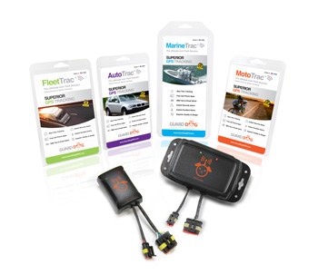

Guard Dog GPS, Inc. is a leading designer and manufacturer of proprietary tracking and security devices:
AutoTrac®
FleetTrac®
MotoTrac®
MarineTrac®
Founded in 1972, the company has been designing, manufacturing and programming GPS devices in the United States since 2004.
Affordable, practical and technically advanced, Guard Dog GPS devices are specifically designed for the highest performance in each vehicle category. Information and alerts are transmitted to desktop computers and handheld devices in real time. Users and managers can monitor vehicle location, speed, routing, idle time, engine start up and shut down, and much more.
Our in-house staff of designers, assemblers and programmers gives Guard Dog GPS the flexibility to quickly respond to customer requirements.z
Guard Dog GPS is smart, reliable and easy to install. Instantaneously activated, its host of features protect your mobile assets and give you peace of mind.
